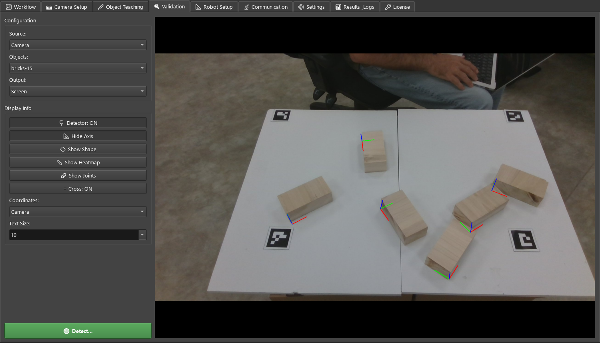
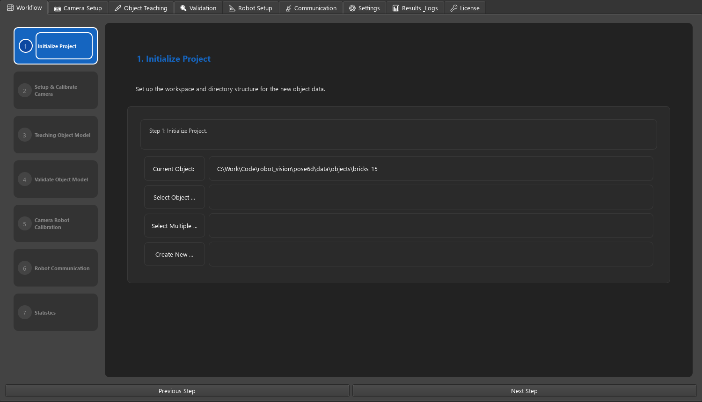
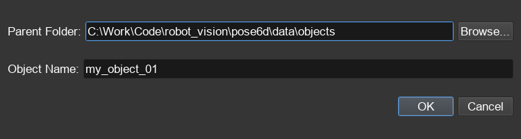
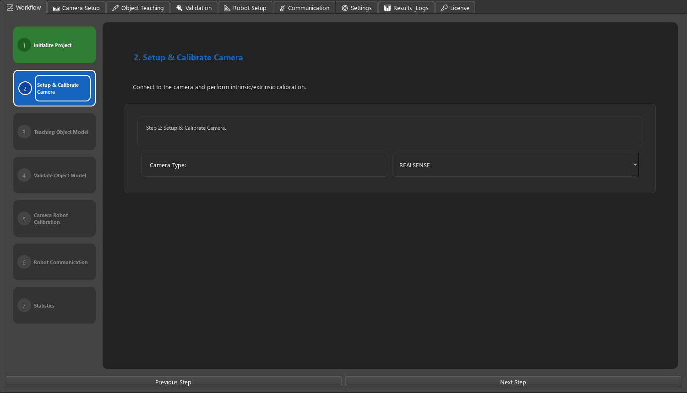
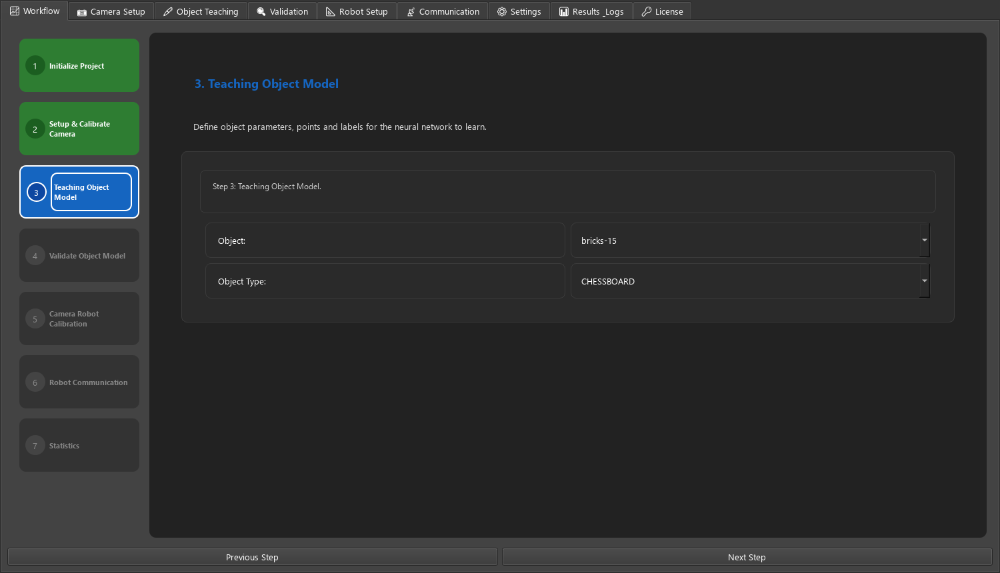
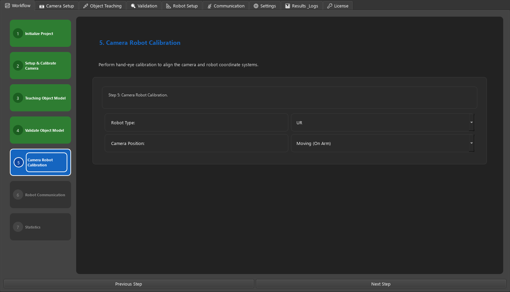
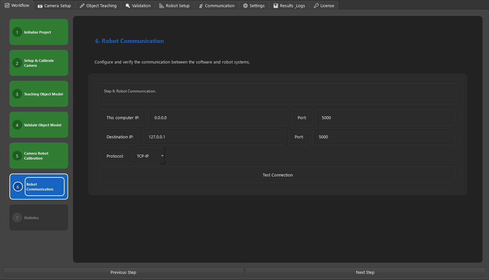
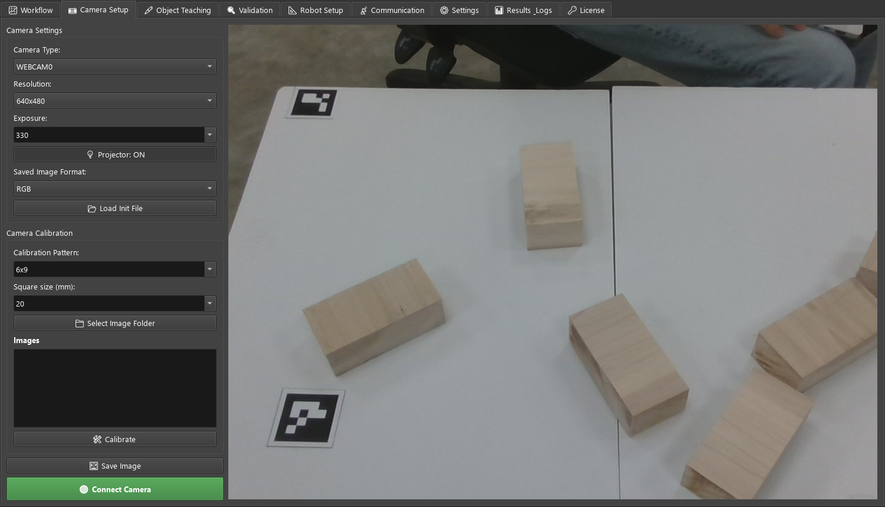

pose6d — 用户手册
pose6d 在相机图像中找到物体，并报告其完整的 6D 位姿（位置与姿态），以便机械臂抓取。你通过在少量图像上标注来"教"它一个新物体，它会训练一个关键点检测网络，此后就能实时检测该物体的每一个实例，并通过 TCP/IP 把位姿发送给机器人。

bricks-15 的六个实例。每条红/绿/蓝轴就是一个估计出的 6D 位姿。快速上手
启动应用
同一个应用可以以三种方式运行：
| 方式 | 命令 | 用途 |
|---|---|---|
| 从源码运行 | 在 pose6d 文件夹中执行 python main_app.py，并激活项目环境（开发电脑上为 C:\Work\Envs\qtgui） | 开发、标注、训练 |
| 部署版 exe | pose6d.exe（由 main_app_deploy.py 构建；入口为 main_app_wrapper.py） | 机器人旁边的生产电脑 |
| Web 界面 | python -m webapp，然后打开 http://127.0.0.1:5000/ | 快速检测测试与远程查看。不支持标注或训练。 |
从源码安装（Windows）：
python -m venv C:\Work\Envs\qtgui
C:\Work\Envs\qtgui\Scripts\activate.bat
pip install torch torchvision # 或使用 CUDA 版本：--index-url https://download.pytorch.org/whl/cu118
pip install -r requirements.txtpyrealsense2 只有 Intel RealSense 相机才需要（已测试型号为 D435 / D455 / D580）。普通 USB 网络摄像头无需它即可工作。源码模式与部署模式
应用启动时会判断自己是从源码运行还是部署版运行（pose6d.exe，或 pose6d_deploy 中经 Cython 编译的模块），行为略有不同：
| 行为 | 源码 | 部署版 |
|---|---|---|
| 启动时许可证检查 | 跳过 | 检查。见许可证。 |
| 控制台日志 | 全部（DEBUG 及以上） | 仅警告与错误 |
| 日志文件 | 无 | exe 旁边的 logs\pose6d.log（INFO 及以上，5 MB × 4 个文件）。若该文件夹不可写：%LOCALAPPDATA%\pose6d\logs。 |
| 验证调试叠加层 | 显示 | Show Heatmap 与 Show Joints 被隐藏 |
两个环境变量可以覆盖这一判断，用于测试或技术支持：
| 变量 | 取值 | 作用 |
|---|---|---|
POSE6D_DEPLOY_MODE | frozen · cython · source | 强制指定模式，而不是自动检测 |
POSE6D_LOG_DIR | 文件夹路径 | 把部署版日志文件写到该处 |
布局与导航
主窗口是一排选项卡，顺序与正常工作流程一致：
| 选项卡 | 用途 |
|---|---|
| 📈 Workflow（工作流） | 分步总览；创建或选择物体，相机/机器人/通信的基本设置 |
| 📷 Camera Setup（相机设置） | 连接相机、采集图像、标定相机镜头（内参） |
| 🖊️ Object Teaching（物体示教） | 在图像上标注关键点并训练检测模型 |
| 🔍 Validation（验证） | 在相机、图像、文件夹或视频上运行训练好的模型；把结果发送给机器人 |
| 📐 Robot Setup（机器人设置） | 相机与机器人之间的手眼标定 |
| 📡 Communication（通信） | 机器人服务器与测试客户端，实时监视每一个数据包 |
| ⚙️ Settings（设置） | 以表单方式编辑当前物体的 object_config.json |
| 📊 Results & Logs（结果与日志） | 结果列表（目前为占位） |
| 🔑 License（许可证） | 许可证状态与激活 |
数据存放位置
属于一个物体的全部内容都放在一个物体文件夹中，默认位于 data\objects\ 下：
data\objects\bricks-15\
object_config.json ← 物体设置：关键点、相机、检测（见参考）
images\ ← 采集的图像，每张已标注图像旁有一个 <image>.json 标签文件
models\ ← 训练得到的权重 keypoint_group_model_NNNN.pth
cameras\ ← calibration.json（相机内参）
results\ ← 基准 / 评估输出
labels\ ← 预留
robots\ ← 预留与具体物体无关的应用级状态保存在 pose6d 文件夹的 pose6d_config.json 中：上次选择的物体、默认相机类型、通信地址。它是本机私有的，首次运行时创建，不会随发行包提供。
概念与术语
| 术语 | 含义 |
|---|---|
| Object（物体） | 机器人应当抓取的一类零件，例如一个木块。以一个物体文件夹的形式保存。 |
| Keypoint / target point（关键点 / 目标点） | 物体上一个有名称、有辨识度的点（角点、边中点），其在物体自身坐标系中的 3D 坐标已知，单位为毫米。bricks-15 有 13 个：顶面角点 t1–t4、底面角点 b1–b4、边中点 c12 c23 c34 c14，以及顶面中心 tc。 |
| Object Id（实例编号） | 同一张图像中可能出现同一物体的多个副本。标注时每个副本获得自己的编号（1、2、3 …），检测时按实例各输出一条结果。 |
| Label（标签） | 某个关键点在一张图像上的像素位置，保存在 <image>.json 中。 |
| Model（模型） | 训练好的关键点网络，models\keypoint_group_model_NNNN.pth（NNNN = 轮次）。编号最大的那个用于检测和继续训练。 |
| Pose（位姿） | 物体相对相机的位置：tvec = 平移 (x, y, z)，单位毫米；rvec = 旋转，用 Rodrigues 旋转向量表示，单位为弧度（轴 × 角度）。由检测到的关键点及其 3D 坐标经 PnP 计算得到。 |
| Quality（质量分） | 0–1 的分数，表示检测到的关键点与物体模型的吻合程度。越接近 1 吻合越好；示例物体的良好检测约为 0.97–0.99。 |
| Intrinsics（内参） | 相机镜头参数（焦距、图像中心、畸变），由相机标定得到。缺少正确内参就无法得到正确位姿。 |
| Hand-eye calibration（手眼标定） | 确定相机相对于机器人法兰的位置（相机装在机械臂上），从而把位姿换算到机器人坐标系。 |
📈 Workflow（工作流）
整个流程的检查清单。左列显示七个步骤（绿色 = 已完成，蓝色 = 当前步骤）；右侧显示当前步骤的说明，某些步骤还带有自己的控件。用底部的 Previous Step / Next Step 前后移动。第 4 步和第 7 步没有自己的控件，请使用 Validation 和 Results 选项卡。
第 1 步 · Initialize Project（初始化项目）

| 控件 | 作用 |
|---|---|
| Current Object | 当前物体文件夹的路径。所有选项卡都作用于该物体。启动时从上次会话恢复。 |
| Select Object … | 文件夹选择器。选择一个已有的物体文件夹；它成为所有选项卡的当前物体。 |
| Create New … | 打开Create New Object对话框（见下），并创建一个新的物体文件夹。 |
| Select Multiple … | 原本用于同时处理多个物体。目前打开的是同一个Create New Object对话框（见已知限制）。 |

data\objects，可用 Browse… 修改）与 Object Name。点击 OK 会创建 <parent>\<name>\，包含标准子文件夹和一个默认的
object_config.json，并把它设为当前物体。
A1–A8、TC），并不是你的真实物体。请在Object Teaching中重命名这些点并填入真实坐标（双击某个目标点）。若要改变点的数量或 Show Shape 使用的面，请在开始标注前到 Settings 选项卡编辑 point_names / point_coord / point_faces。第 2 步 · Setup & Calibrate Camera（设置并标定相机）

| 控件 | 作用 |
|---|---|
| Camera Type | pose6d_config.json 中的默认相机类型（camera_type）。实际打开哪台相机是在Camera Setup中按物体设置的，两者可以不同。 |
第 3 步 · Teaching Object Model（示教物体模型）

| 控件 | 作用 |
|---|---|
| Object | 物体目录下的所有有效物体文件夹。选择其中一个即把它设为当前物体（与 Select Object 相同）。 |
| Object Type | 物体模型类型：CHESSBOARD、BOX、KEYPOINT、POSE、SKELETON。会立即写入物体的 object_config.json。bricks-15 这类训练好的关键点物体使用 POSE；只有该类型会输出供机器人使用的 6D 位姿。 |
第 5 步 · Camera Robot Calibration（相机-机器人标定）

| 控件 | 取值 | 作用 |
|---|---|---|
| Robot Type | UR KUKA TM ABB FANUC YASKAWA DENSO DOBOT OTHER | 机器人品牌，作为 robot_type 保存在 pose6d_config.json |
| Camera Position | Moving (On Arm) · Static | 相机装在机械臂上还是固定在工作单元中，作为 camera_position 保存 |
标定本身在 Robot Setup 中完成。
第 6 步 · Robot Communication（机器人通信）

| 控件 | 默认值 | 作用 |
|---|---|---|
| This computer IP / Port | 0.0.0.0 / 5000 | 本机地址，保存为 local_ip / local_port |
| Destination IP / Port | 127.0.0.1 / 5000 | 机器人控制器地址，保存为 remote_ip / remote_port |
| Protocol | TCP-IP | TCP-IP 或 MODBUS |
| Test Connection | 先保存这些字段，然后用 2 秒尝试与目标建立 TCP 连接。按钮变为 Connection OK（绿色）或 Connection Failed（红色）。MODBUS 测试尚未实现，始终报告失败。 |
127.0.0.1:5005）。📷 Camera Setup（相机设置）
连接相机、查看实时图像、采集用于标注的图像，并标定相机镜头。

Camera Settings（相机设置）
| 控件 | 取值 | 作用 / 建议 |
|---|---|---|
| Camera Type | REALSENSE WEBCAM0 WEBCAM1 BASLER IDS FLIR DALSA GENICAM OTHER | 要使用的相机驱动。RealSense、普通摄像头和 Basler 有自己的驱动；其余项目目前通过通用摄像头（OpenCV）驱动打开。按物体保存在 camera_parameters.camera_type。 |
| Resolution（分辨率） | 1280x720 · 640x480 · 640x360 | 请求的采集尺寸。越高细节越多但检测越慢。更改后要重新标定相机，因为内参与分辨率有关。 |
| Exposure（曝光） | 330 100 200 500 1000 2000 5000，或直接输入数值 | 以相机自身单位表示的曝光，连接后立即生效。运动部件发虚时调低；光线暗的工作单元中调高。 |
| 💡 Projector: ON/OFF | RealSense 的红外点阵投射器。如果你标注的图像中能看到点阵图案，请把它关掉。 | |
| Saved Image Format（保存图像格式） | RGB Left Right Depth RGD LRD All | Save Image 写入哪（几）个数据流。标注请使用 RGB。Left/Right/Depth 需要 RealSense 相机。 |
| 📂 Load Init File | 打开一个 .ini 设置文件的对话框。加载功能尚未实现。 |
采集图像
- 先选择物体（工作流第 1 步）。图像会保存到该物体的文件夹中。
- 设置 Camera Type、Resolution 和 Exposure，然后点击 🟢 Connect Camera。实时图像出现在右侧，按钮变红（🔴 Disconnect Camera）。
- 对每个视角点击 🖼️ Save Image。在两次拍摄之间移动物体和相机：不同的位置、角度、光照以及部分遮挡，能得到更鲁棒的模型。
图像保存为 <format>_YYYYMMDD_HHMMSS.png（例如 rgb_20261028_141502.png），位于物体的 images\ 文件夹；如果你在标定面板中用 Select Image Folder 选择过文件夹，则保存到那里。
bricks-15 由 14 张标注图像训练得到，每张图像中有多个木块。建议从 10–20 张差异较大的图像开始，在检测薄弱的地方再补充。Camera Calibration（相机标定）
用打印出来的棋盘格照片（doc\checkerboard_pattern.pdf）计算相机内参。
| 控件 | 取值 | 含义 / 建议 |
|---|---|---|
| Calibration Pattern（标定图案） | 6x9 7x10 4x11 5x5，或输入 NxM | 棋盘格的内角点数量（列 × 行），不是方格数量。 |
| Square size (mm)（方格边长） | 10 20 30 50 100 200 300，或输入数值 | 打印出来的一个方格的边长，按实际打印尺寸测量。它决定标定的尺度。 |
| 📁 Select Image Folder | 存放棋盘格照片的文件夹；这些照片会列在 Images 下。点击其中一张可查看。 | |
| 🛠️ Calibrate | 对文件夹中的每一张图像运行标定。 |
object_config.json 以及检测读取的 cameras\calibration.json。拍摄 15–25 张照片，让棋盘格占据图像的不同区域并以不同角度倾斜。图案或方格边长无效时会显示 Bad Pattern / Bad Square Size；可用图像太少时显示 Calibration Failed。